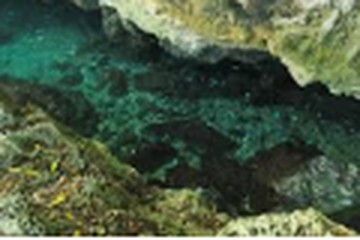
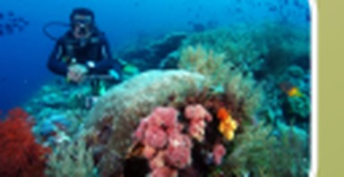
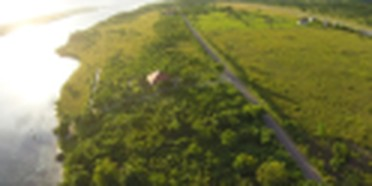

Goa Kontamale
Gua air (mirip kolam alami) yang terbentuk dari batuan kapur, dengan air berwarna biru kehijauan yang jernih.
Lihat tarifExplore Wakatobi, Support Local
Wakaloka adalah platform pemesanan tiket wisata di Kabupaten Wakatobi. Setiap tiket bisa digabung dengan produk UMKM lokal di destinasi yang sama, sehingga perjalananmu juga menggerakkan ekonomi daerah.

Gua air (mirip kolam alami) yang terbentuk dari batuan kapur, dengan air berwarna biru kehijauan yang jernih.
Lihat tarif
Spot snorkeling dan diving bagi pemula. Terumbu karang masih berada di dekat permukaan, air tenang dan jernih, serta pantai berpasir putih yang bersih.
Lihat tarif
Puncak Khayangan Tomia di Pulau Tomia adalah destinasi dataran tinggi dengan panorama sabana hijau dan pemandangan laut lepas. Cocok untuk menikmati matahari terbit dan terbenam.
Lihat tarif